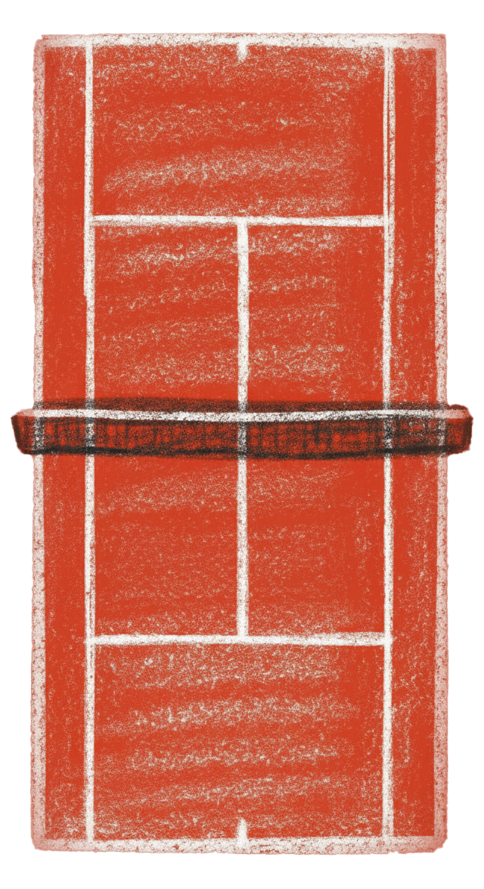

Love All: The Gentle Beginning of Every Tennis Match
If you’ve ever watched a tennis game, you might’ve heard the umpire call out, “Love all!” — and wondered why they don’t just say “zero.” In tennis, love means nothing, but its origin is far more charming than it sounds.

It all started with an egg
Long ago, when tennis spread from France to England, players used the French word “l’œuf” — meaning “egg” — to describe a score of zero. The round shape of an egg resembled the number 0, so it became a playful way to mark an empty score.
When the term reached English ears, “l’œuf” sounded a bit like “love.” Over time, the word stuck — and now, every time a match begins at “love-all,” players are unknowingly echoing that little French egg from centuries ago.
Beyond its literal meaning, the phrase has a quiet poetry to it — both players start equal, with nothing, yet together in the spirit of the game. It’s a moment of balance and respect, a reminder that before every contest, there’s always love.